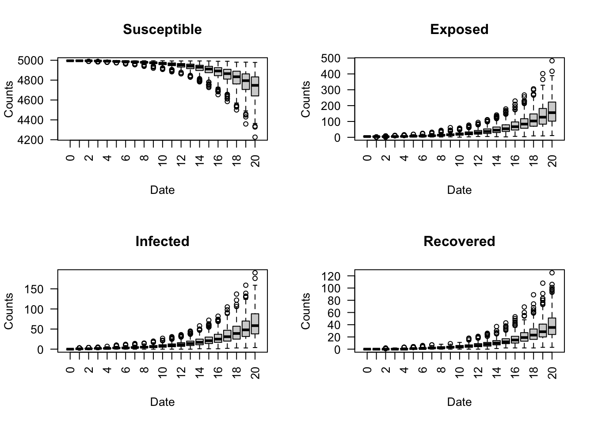

Part 3: Multiple Runs
Introduction
The purpose of the run_multiple function is to run a specified number of simulations using the same model object. That is, this function makes it possible to compare model results across several separate and repeated simulations.
The Principle Behind Multiple Runs
In statistics, the Law of Large Numbers ensures that as the sample size increases, the sample mean (average) of a random variable will converge to the population mean. The same principle applies when using multiple runs to simulate epidemiological models. As the number of epiworldR simulations increases, the sample means of the reproductive number or model parameters, for example, will converge to their corresponding population means.
Example: Simulating a SEIRCONN Model 50 Times
Setup and Running Model
To use the run_multiple function in epiworldR, create your epiworldR_model of choice; in this case, the example uses a SEIRCONN model for COVID-19, 10000 people, an initial prevalence of 0.0001 (0.01%), a contact rate of 2, probability of transmission 0.5, a total of 7 incubation days, and probability of recovery \(\frac{1}{3}\).
Generating a Saver
Next, generate a saver for the purpose of extracting the total_hist and reproductive information from the model object. Keep in mind that you can generate a saver for any metric compatible with the make_saver function (see details section of the make_saver help manual).
Running the Simulation
Now, use the run_multiple function with the model object, number of desired days to run the simulation, number of simulations to run, the generated saver, and number of threads for parallel computing.
Code
Starting multiple runs (50)
_________________________________________________________________________
_________________________________________________________________________
||||||||||||||||||||||||||||||||||||||||||||||||||||||||||||||||||||||||| done.
done.Extracting Results
Using the run_multiple_get_results function, extract the results from the model object that was simulated 50 times for comparison across simulations.
sim_num date nvariants state counts
1 1 0 1 Susceptible 9999
2 1 0 1 Exposed 1
3 1 0 1 Infected 0
4 1 0 1 Recovered 0
5 1 1 1 Susceptible 9999
6 1 1 1 Exposed 1 sim_num variant source source_exposure_date rt
1 1 0 459 50 0
2 1 0 464 50 0
3 1 0 555 50 0
4 1 0 863 50 0
5 1 0 882 50 0
6 1 0 2199 50 0Plotting
To plot the model parameters and reproductive numbers over time using boxplots, extract the results from the model object using run_multiple_get_results. For this example, the dates are filtered to observe the model parameters over the first 20 days. Notice each boxplot in the below table represents the observed values from each of the 50 simulations for each date.
Code

To view the a plot of the reproductive number over all 50 days for each of the 50 simulations, store the reproductive results to a new object using run_multiple_get_results, then plot using the plot function. Notice each source exposure date displays a boxplot representing the distribution of reproductive numbers across all 50 simulations for each date. As expected, the reproductive number on average, decreases over time.

Exercise 1
Consider for this exercise that there is a flu outbreak. Your goal is to observe the average reproductive number over 100 simulations. Using a run_multiple simulation, what is the average reproductive number over the course of the first 20 days? Use a SEIRCONN model with n = 10000, prevalence = 0.01, contact_rate = 2, prob_transmission = 0.5, incubation_days = 2, and prob_recovery = \(\frac{1}{7}\).
Tip
General Steps:
1. Create epiworldR_model
2. Generate saver
3. Run epiworldR_model
4. Plot average reproductive number
Solution
Code
model_seirconn <- ModelSEIRCONN(
name = "Flu",
n = 10000,
prevalence = 0.01,
contact_rate = 2,
prob_transmission = 0.5,
incubation_days = 2,
prob_recovery = 1/7
)
# Generating a saver
saver <- make_saver("reproductive")
# Running and printing
run_multiple(model_seirconn, ndays = 20, nsims = 100, saver = saver, nthread = 2)Starting multiple runs (100)
_________________________________________________________________________
_________________________________________________________________________
||||||||||||||||||||||||||||||||||||||||||||||||||||||||||||||||||||||||| done.
done.Code

Exercise 2
Simulate a vaccine intervention for the previous exercise’s Flu virus where 50% of individuals in the population will receive the vaccine on day 10. How then, does the average reproductive number behave over 20 days and 100 simulations? Assume the following parameters: susceptibility_reduction = .9, transmission_reduction = .5, recovery_enhancer = .5, and death_reduction = .9.
Tip
General Steps:
1. Create tool
2. Use globalaction_tool & add_global_action
3. Generate saver & run_multiple 4. Plot average reproductive number
Solution
Code
# Creating a tool
epitool <- tool(
name = "Vaccine",
susceptibility_reduction = .9,
transmission_reduction = .5,
recovery_enhancer = .5,
death_reduction = .9
)
# Adding a global action
vaccine_day_10 <- globalaction_tool(epitool, .5, day = 10)
add_global_action(model_seirconn, vaccine_day_10)
# Generating a saver
saver_2 <- make_saver("reproductive")
# Running and printing
run_multiple(model_seirconn, ndays = 20, nsims = 100, saver = saver_2,
nthread = 2)Starting multiple runs (100)
_________________________________________________________________________
_________________________________________________________________________
||||||||||||||||||||||||||||||||||||||||||||||||||||||||||||||||||||||||| done.
done.Code